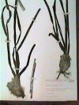
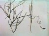
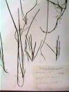

Posidonia (*)
¡No está en el Atlántico... Pero es importante
conocerla!Hojas anchas (más de 1 cm en general)






| Géneros |
Especies |
Caracteres |
Imágenes |
|---|---|---|---|
| Cymodocea |
Perenne, con rizoma de 2-4 mm de
diámetro; hojas de 2,5-8 mm de anchura, fasciculadas,
con ápice redondeado |
|
|
|
Posidonia (*)
¡No está en el Atlántico... Pero es importante
conocerla! |
Perenne, con rizoma muy robusto,
cubierto de escamas y de vainas transformadas en fibras Hojas anchas (más de 1 cm en general) |
 |
|
| Ruppia |
Anual, sin rizoma; hojas de 0,5-1
mm de anchura, con estípulas envainantes, dispuestas a lo
largo
de finos tallos, con ápice obtuso |
 |
|
| Zostera |
Z. noltii |
Perenne, con rizoma de menos de 2 mm
de diámetro; hojas de hasta 1,3 mm de anchura,
fasciculadas,
con ápice emarginado |
 |